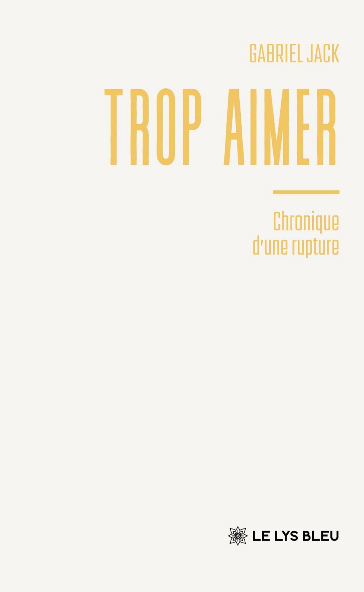

Trop aimer - Chronique d'une rupture
Après une séparation, comment envisager l'avenir quand les projets à deux s'effondrent ?
Ce qui vous attend
- Une écriture attentive aux détails du quotidien
- Les premiers signes d'un renouveau
Les sorties du mois
Une nouvelle histoire à découvrir

Après une séparation, comment envisager l'avenir quand les projets à deux s'effondrent ?